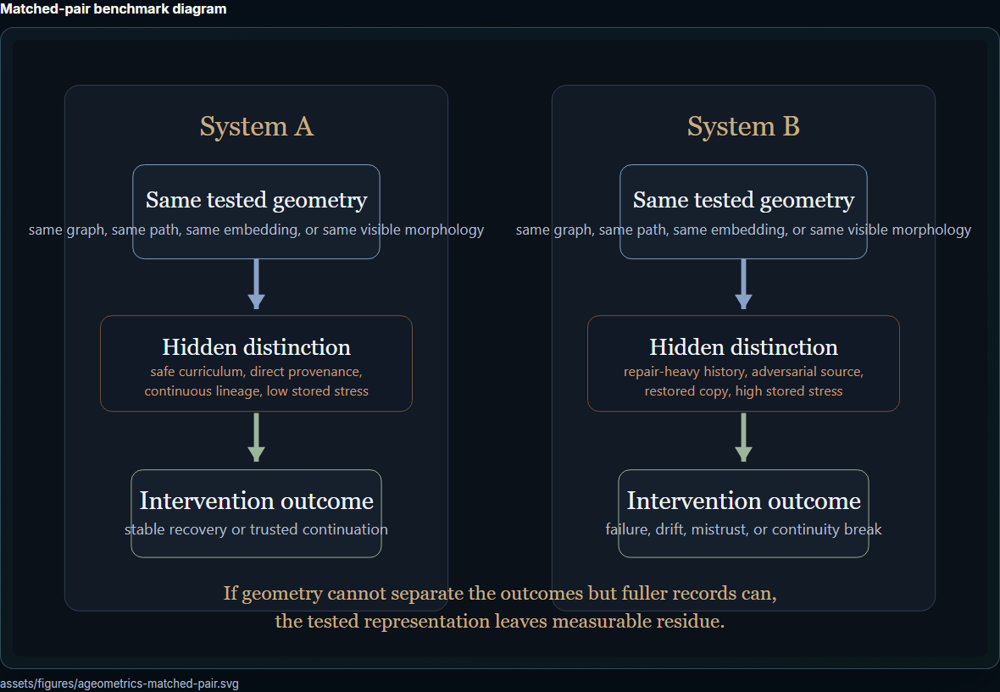
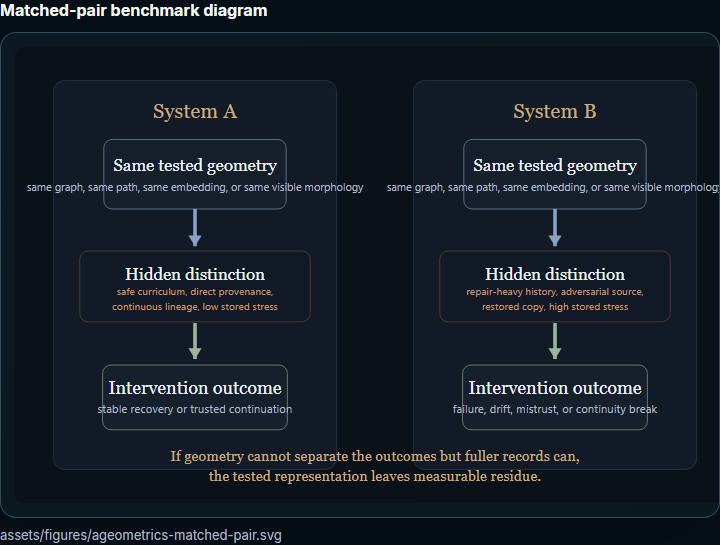
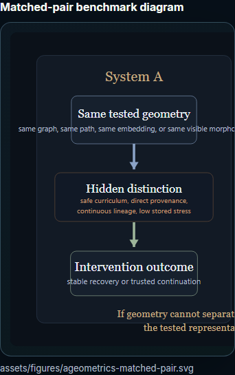
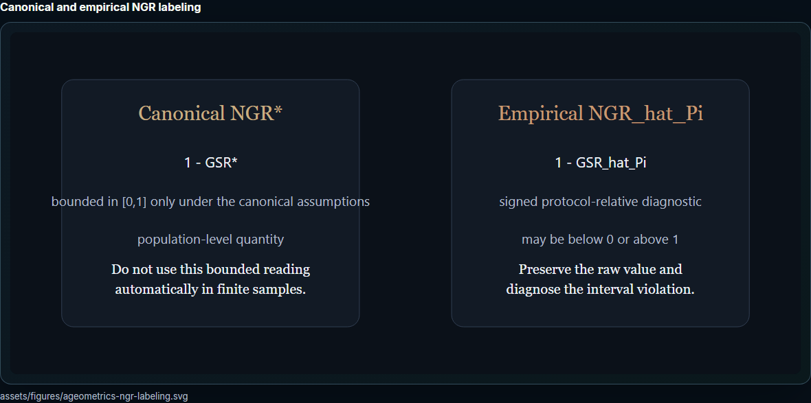
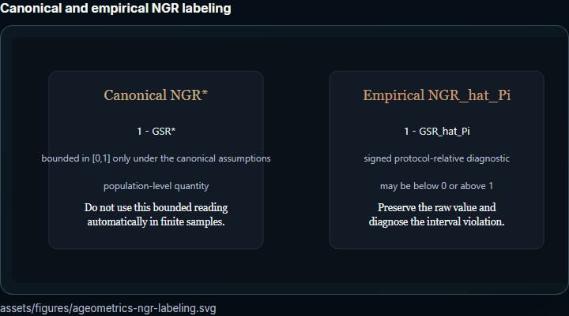
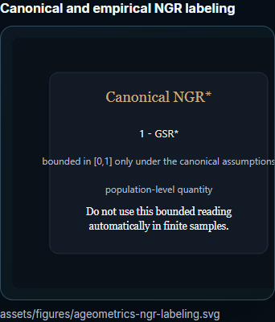
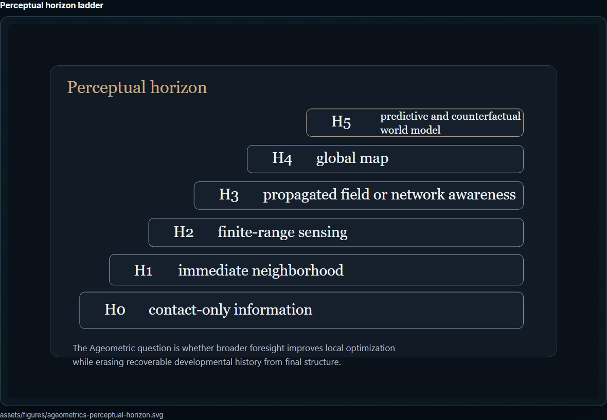
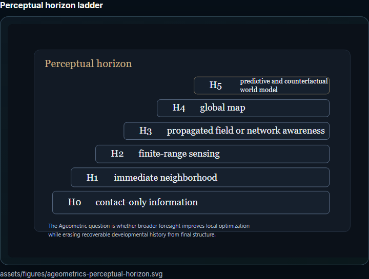
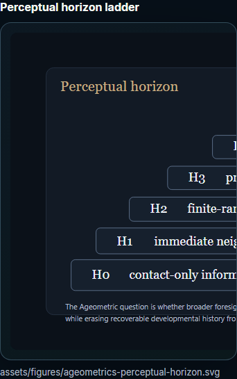

changed-ageometrics-widths
Publication-safe human-review contact sheet. Screenshots use the same contained-scroll frame treatment as the repaired site figures.
Matched-pair benchmark diagram
assets/figures/ageometrics-matched-pair.svg



Canonical and empirical NGR labeling
assets/figures/ageometrics-ngr-labeling.svg



Perceptual horizon ladder
assets/figures/ageometrics-perceptual-horizon.svg


